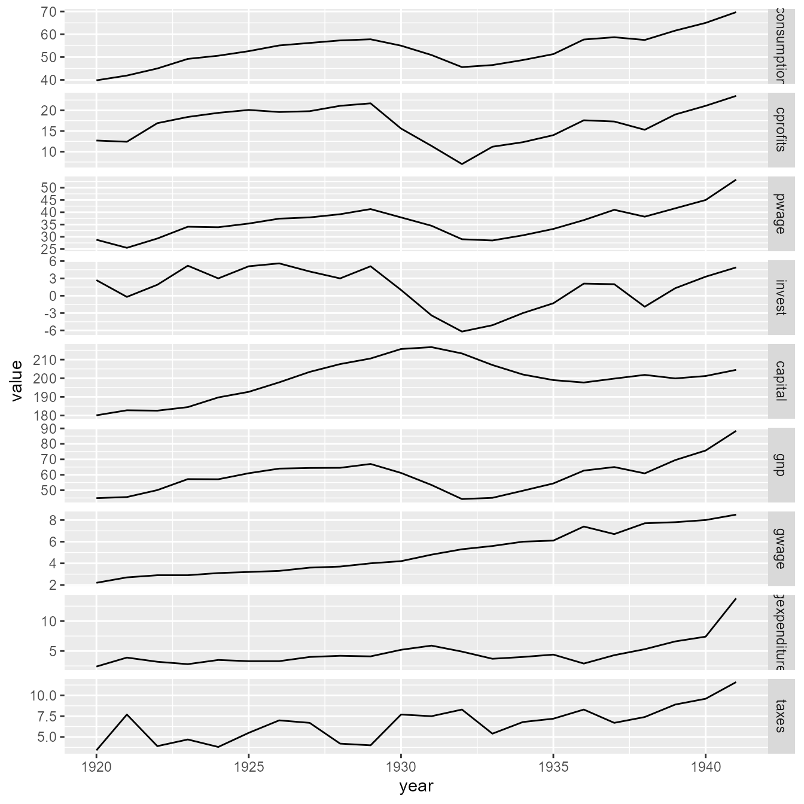
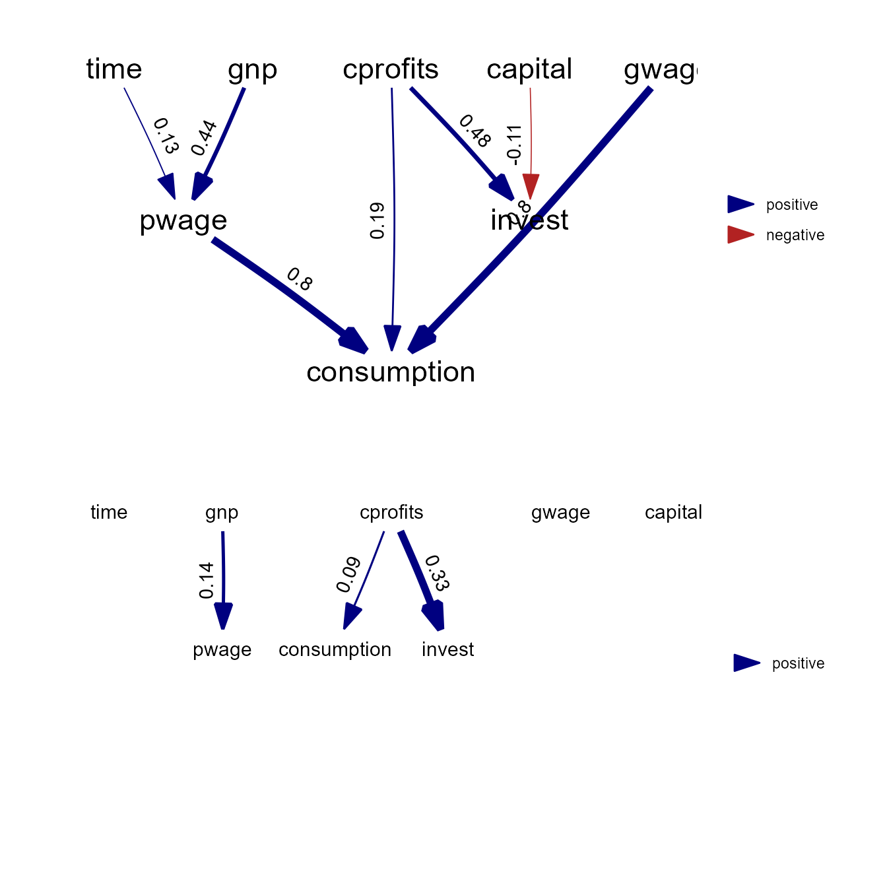
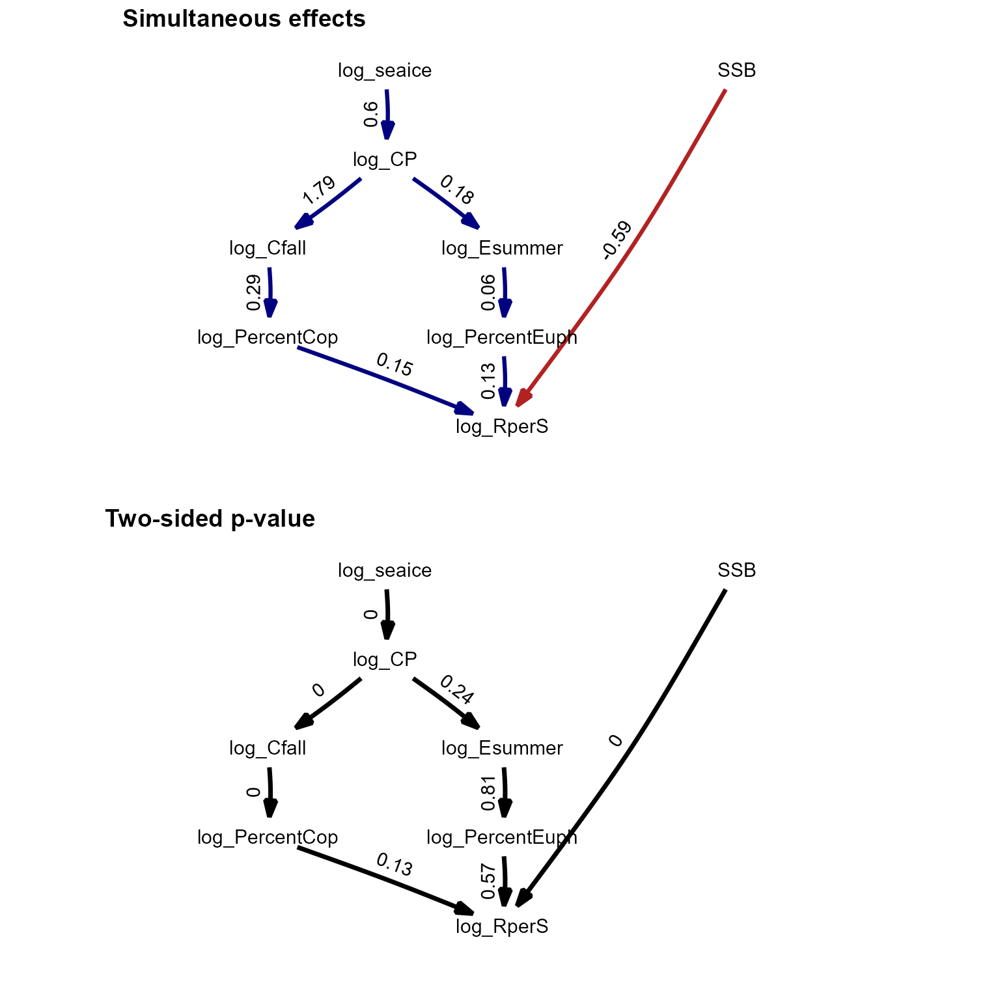

library(dsem)
library(dynlm)
library(ggplot2)
library(reshape)
library(gridExtra)
library(phylopath)dsem is an R package for fitting dynamic structural
equation models (DSEMs) with a simple user-interface and generic
specification of simultaneous and lagged effects in a non-recursive
structure. We here highlight a few features in particular.
Comparison with dynamic linear models
We first demonstrate that dsem gives identical results
to dynlm for a well-known econometric model, the Klein-1
model.
data(KleinI, package="AER")
TS = ts(data.frame(KleinI, "time"=time(KleinI) - 1931))
# dynlm
fm_cons <- dynlm(consumption ~ cprofits + L(cprofits) + I(pwage + gwage), data = TS)
fm_inv <- dynlm(invest ~ cprofits + L(cprofits) + capital, data = TS) #
fm_pwage <- dynlm(pwage ~ gnp + L(gnp) + time, data = TS)
# dsem
sem = "
# Link, lag, param_name
cprofits -> consumption, 0, a1
cprofits -> consumption, 1, a2
pwage -> consumption, 0, a3
gwage -> consumption, 0, a3
cprofits -> invest, 0, b1
cprofits -> invest, 1, b2
capital -> invest, 0, b3
gnp -> pwage, 0, c2
gnp -> pwage, 1, c3
time -> pwage, 0, c1
"
tsdata = TS[,c("time","gnp","pwage","cprofits",'consumption',
"gwage","invest","capital")]
fit = dsem( sem=sem,
tsdata = tsdata,
estimate_delta0 = TRUE,
control = dsem_control(
quiet = TRUE,
newton_loops = 0) )
#> 1 regions found.
#> Using 1 threads
#> 1 regions found.
#> Using 1 threads
# Compile
m1 = rbind( summary(fm_cons)$coef[-1,],
summary(fm_inv)$coef[-1,],
summary(fm_pwage)$coef[-1,] )[,1:2]
m2 = summary(fit$sdrep)[1:9,]
m = rbind(
data.frame("var"=rownames(m1),m1,"method"="OLS","eq"=rep(c("C","I","Wp"),each=3)),
data.frame("var"=rownames(m1),m2,"method"="GMRF","eq"=rep(c("C","I","Wp"),each=3))
)
m = cbind(m, "lower"=m$Estimate-m$Std..Error, "upper"=m$Estimate+m$Std..Error )
# ggplot estimates
longform = melt( as.data.frame(KleinI) )
longform$year = rep( time(KleinI), 9 )
p1 = ggplot( data=longform, aes(x=year, y=value) ) +
facet_grid( rows=vars(variable), scales="free" ) +
geom_line( )
p2 = ggplot(data=m, aes(x=interaction(var,eq), y=Estimate, color=method)) +
geom_point( position=position_dodge(0.9) ) +
geom_errorbar( aes(ymax=as.numeric(upper),ymin=as.numeric(lower)),
width=0.25, position=position_dodge(0.9)) #
p3 = plot( as_fitted_DAG(fit) ) +
expand_limits(x = c(-0.2,1) )
p4 = plot( as_fitted_DAG(fit, lag=1), text_size=4 ) +
expand_limits(x = c(-0.2,1), y = c(-0.2,0) )
p1
p2
grid.arrange( arrangeGrob(p3, p4, nrow=2) )
Results show that both packages provide (almost) identical estimates and standard errors.
We can also compare results using the Laplace approximation against those obtained via numerical integration of random effects using MCMC. In this example, MCMC results in somewhat higher estimates of exogenous variance parameters (presumably because those follow a chi-squared distribution with positive skewness), but otherwise the two produce similar estimates.
library(tmbstan)
# MCMC for both fixed and random effects
mcmc = tmbstan( fit$obj, init="last.par.best" )
summary_mcmc = summary(mcmc)
# long-form data frame
m1 = summary_mcmc$summary[1:17,c('mean','sd')]
rownames(m1) = paste0( "b", seq_len(nrow(m1)) )
m2 = summary(fit$sdrep)[1:17,c('Estimate','Std. Error')]
m = rbind(
data.frame('mean'=m1[,1], 'sd'=m1[,2], 'par'=rownames(m1), "method"="MCMC"),
data.frame('mean'=m2[,1], 'sd'=m2[,2], 'par'=rownames(m1), "method"="LA")
)
m$lower = m$mean - m$sd
m$upper = m$mean + m$sd
# plot
ggplot(data=m, aes(x=par, y=mean, col=method)) +
geom_point( position=position_dodge(0.9) ) +
geom_errorbar( aes(ymax=as.numeric(upper),ymin=as.numeric(lower)),
width=0.25, position=position_dodge(0.9)) #
Comparison with vector autoregressive models
We next demonstrate that dsem gives similar results to a
vector autoregressive (VAR) model. To do so, we analyze population
abundance of wolf and moose populations on Isle Royale from 1959 to
2019, downloaded from their website (Vucetich, JA and Peterson RO. 2012.
The population biology of Isle Royale wolves and moose: an overview.
URL: www.isleroyalewolf.org).
This dataset was previously analyzed by in Chapter 14 of the User Manual for the R-package MARSS (Holmes, E. E., M. D. Scheuerell, and E. J. Ward (2023) Analysis of multivariate time-series using the MARSS package. Version 3.11.8. NOAA Fisheries, Northwest Fisheries Science Center, 2725 Montlake Blvd E., Seattle, WA 98112, DOI: 10.5281/zenodo.5781847).
Here, we compare fits using dsem with
dynlm, as well as a vector autoregressive model package
vars, and finally with MARSS.
data(isle_royale)
data = ts( log(isle_royale[,2:3]), start=1959)
sem = "
# Link, lag, param_name
wolves -> wolves, 1, arW
moose -> wolves, 1, MtoW
wolves -> moose, 1, WtoM
moose -> moose, 1, arM
"
# initial first without delta0 (to improve starting values)
fit0 = dsem( sem = sem,
tsdata = data,
estimate_delta0 = FALSE,
control = dsem_control(
quiet = TRUE,
getsd = FALSE) )
#> Warning in nlminb(start = out$opt$par, objective = obj$fn, gradient = obj$gr, :
#> NA/NaN function evaluation
# Refit with delta0
fit = dsem( sem = sem,
tsdata = data,
estimate_delta0 = TRUE,
control = dsem_control( quiet=TRUE,
parameters = fit0$obj$env$parList()) )
# dynlm
fm_wolf = dynlm( wolves ~ 1 + L(wolves) + L(moose), data=data ) #
fm_moose = dynlm( moose ~ 1 + L(wolves) + L(moose), data=data ) #
# MARSS
library(MARSS)
z.royale.dat <- t(scale(data.frame(data),center=TRUE,scale=FALSE))
royale.model.1 <- list(
Z = "identity",
B = "unconstrained",
Q = "diagonal and unequal",
R = "zero",
U = "zero"
)
kem.1 <- MARSS(z.royale.dat, model = royale.model.1)
#> Success! algorithm run for 15 iterations. abstol and log-log tests passed.
#> Alert: conv.test.slope.tol is 0.5.
#> Test with smaller values (<0.1) to ensure convergence.
#>
#> MARSS fit is
#> Estimation method: kem
#> Convergence test: conv.test.slope.tol = 0.5, abstol = 0.001
#> Algorithm ran 15 (=minit) iterations and convergence was reached.
#> Log-likelihood: -3.21765
#> AIC: 22.4353 AICc: 23.70964
#>
#> Estimate
#> B.(1,1) 0.8669
#> B.(2,1) -0.1240
#> B.(1,2) 0.1417
#> B.(2,2) 0.8176
#> Q.(X.wolves,X.wolves) 0.1341
#> Q.(X.moose,X.moose) 0.0284
#> x0.X.wolves 0.2324
#> x0.X.moose -0.6476
#> Initial states (x0) defined at t=0
#>
#> Standard errors have not been calculated.
#> Use MARSSparamCIs to compute CIs and bias estimates.
SE <- MARSSparamCIs( kem.1 )
# Using VAR package
library(vars)
var = VAR( data, type="const" )
### Compile
m1 = rbind( summary(fm_wolf)$coef[-1,], summary(fm_moose)$coef[-1,] )[,1:2]
m2 = summary(fit$sdrep)[1:4,]
#m2 = cbind( "Estimate"=fit$opt$par, "Std. Error"=fit$sdrep$par.fixed )[1:4,]
m3 = cbind( SE$parMean[c(1,3,2,4)], SE$par.se$B[c(1,3,2,4)] )
colnames(m3) = colnames(m2)
m4 = rbind( summary(var$varresult$wolves)$coef[-3,], summary(var$varresult$moose)$coef[-3,] )[,1:2]
# Bundle
m = rbind(
data.frame("var"=rownames(m1), m1, "method"="dynlm", "eq"=rep(c("Wolf","Moose"),each=2)),
data.frame("var"=rownames(m1), m2, "method"="dsem", "eq"=rep(c("Wolf","Moose"),each=2)),
data.frame("var"=rownames(m1), m3, "method"="MARSS", "eq"=rep(c("Wolf","Moose"),each=2)),
data.frame("var"=rownames(m1), m4, "method"="vars", "eq"=rep(c("Wolf","Moose"),each=2))
)
#knitr::kable( m1, digits=3)
#knitr::kable( m2, digits=3)
m = cbind(m, "lower"=m$Estimate-m$Std..Error, "upper"=m$Estimate+m$Std..Error )
# ggplot estimates ... interaction(x,y) causes an error sometimes
library(ggplot2)
library(ggpubr)
library(ggraph)
longform = reshape( isle_royale, idvar = "year", direction="long", varying=list(2:3), v.names="abundance", timevar="species", times=c("wolves","moose") )
p1 = ggplot( data=longform, aes(x=year, y=abundance) ) +
facet_grid( rows=vars(species), scales="free" ) +
geom_point( )
p2 = ggplot(data=m, aes(x=interaction(var,eq), y=Estimate, color=method)) +
geom_point( position=position_dodge(0.9) ) +
geom_errorbar( aes(ymax=as.numeric(upper),ymin=as.numeric(lower)),
width=0.25, position=position_dodge(0.9)) #
p3 = plot( as_fitted_DAG(fit, lag=1), rotation=0 ) +
geom_edge_loop( aes( label=round(weight,2), direction=0)) + #arrow=arrow(), , angle_calc="along", label_dodge=grid::unit(10,"points") )
expand_limits(x = c(-0.1,0) )
ggarrange( p1, p2, p3,
labels = c("Time-series data", "Estimated effects", "Fitted path digram"),
ncol = 1, nrow = 3)
Results again show that dsem can estimate parameters for
a vector autoregressive model (VAM), and it exactly matches results from
vars, using dynlm, or using
MARSS.
Multi-causal ecosystem synthesis
We next replicate an analysis involving climate, forage fishes, stomach contents, and recruitment of a predatory fish.
data(bering_sea)
Z = ts( bering_sea )
family = rep('fixed', ncol(bering_sea))
# Specify model
sem = "
# Link, lag, param_name
log_seaice -> log_CP, 0, seaice_to_CP
log_CP -> log_Cfall, 0, CP_to_Cfall
log_CP -> log_Esummer, 0, CP_to_E
log_PercentEuph -> log_RperS, 0, Seuph_to_RperS
log_PercentCop -> log_RperS, 0, Scop_to_RperS
log_Esummer -> log_PercentEuph, 0, Esummer_to_Suph
log_Cfall -> log_PercentCop, 0, Cfall_to_Scop
log_SSB -> log_RperS, 0, SSB_to_RperS
log_seaice -> log_seaice, 1, AR1, 0.001
log_CP -> log_CP, 1, AR2, 0.001
log_Cspring -> log_Cspring, 1, AR3, 0.001
log_Cfall -> log_Cfall, 1, AR4, 0.001
log_Esummer -> log_Esummer, 1, AR5, 0.001
log_SSB -> log_SSB, 1, AR6, 0.001
log_RperS -> log_RperS, 1, AR7, 0.001
log_PercentEuph -> log_PercentEuph, 1, AR8, 0.001
log_PercentCop -> log_PercentCop, 1, AR9, 0.001
"
# Fit
fit = dsem( sem = sem,
tsdata = Z,
family = family,
control = dsem_control(use_REML=FALSE, quiet=TRUE) )
ParHat = fit$obj$env$parList()
# summary( fit )
# Timeseries plot
oldpar <- par(no.readonly = TRUE)
par( mfcol=c(3,3), mar=c(2,2,2,0), mgp=c(2,0.5,0), tck=-0.02 )
for(i in 1:ncol(bering_sea)){
tmp = bering_sea[,i,drop=FALSE]
tmp = cbind( tmp, "PSEM"=ParHat$x_tj[,i] )
SD = as.list(fit$sdrep,what="Std.")$x_tj[,i]
tmp = cbind( tmp, outer(tmp[,2],c(1,1)) +
outer(ifelse(is.na(SD),0,SD),c(-1,1)) )
#
plot( x=rownames(bering_sea), y=tmp[,1], ylim=range(tmp,na.rm=TRUE),
type="p", main=colnames(bering_sea)[i], pch=20, cex=2 )
lines( x=rownames(bering_sea), y=tmp[,2], type="l", lwd=2,
col="blue", lty="solid" )
polygon( x=c(rownames(bering_sea),rev(rownames(bering_sea))),
y=c(tmp[,3],rev(tmp[,4])), col=rgb(0,0,1,0.2), border=NA )
}
par(oldpar)
#
library(phylopath)
library(ggplot2)
library(ggpubr)
library(reshape)
library(gridExtra)
longform = melt( bering_sea )
longform$year = rep( 1963:2023, ncol(bering_sea) )
p0 = ggplot( data=longform, aes(x=year, y=value) ) +
facet_grid( rows=vars(variable), scales="free" ) +
geom_point( )
p1 = plot( (as_fitted_DAG(fit)), edge.width=1, type="width",
text_size=4, show.legend=FALSE,
arrow = grid::arrow(type='closed', 18, grid::unit(10,'points')) ) +
scale_x_continuous(expand = c(0.4, 0.1))
p1$layers[[1]]$mapping$edge_width = 1
p2 = plot( (as_fitted_DAG(fit, what="p_value")), edge.width=1, type="width",
text_size=4, show.legend=FALSE, colors=c('black', 'black'),
arrow = grid::arrow(type='closed', 18, grid::unit(10,'points')) ) +
scale_x_continuous(expand = c(0.4, 0.1))
p2$layers[[1]]$mapping$edge_width = 0.5
#grid.arrange( arrangeGrob( p0+ggtitle("timeseries"),
# arrangeGrob( p1+ggtitle("Estimated path diagram"),
# p2+ggtitle("Estimated p-values"), nrow=2), ncol=2 ) )
ggarrange(p1, p2, labels = c("Simultaneous effects", "Two-sided p-value"),
ncol = 1, nrow = 2)
These results are further discussed in the paper describing dsem.
Site-replicated trophic cascade
Finally, we replicate an analysis involving a trophic cascade involving sea stars predators, sea urchin consumers, and kelp producers.
data(sea_otter)
Z = ts( sea_otter[,-1] )
# Specify model
sem = "
Pycno_CANNERY_DC -> log_Urchins_CANNERY_DC, 0, x2
log_Urchins_CANNERY_DC -> log_Kelp_CANNERY_DC, 0, x3
log_Otter_Count_CANNERY_DC -> log_Kelp_CANNERY_DC, 0, x4
Pycno_CANNERY_UC -> log_Urchins_CANNERY_UC, 0, x2
log_Urchins_CANNERY_UC -> log_Kelp_CANNERY_UC, 0, x3
log_Otter_Count_CANNERY_UC -> log_Kelp_CANNERY_UC, 0, x4
Pycno_HOPKINS_DC -> log_Urchins_HOPKINS_DC, 0, x2
log_Urchins_HOPKINS_DC -> log_Kelp_HOPKINS_DC, 0, x3
log_Otter_Count_HOPKINS_DC -> log_Kelp_HOPKINS_DC, 0, x4
Pycno_HOPKINS_UC -> log_Urchins_HOPKINS_UC, 0, x2
log_Urchins_HOPKINS_UC -> log_Kelp_HOPKINS_UC, 0, x3
log_Otter_Count_HOPKINS_UC -> log_Kelp_HOPKINS_UC, 0, x4
Pycno_LOVERS_DC -> log_Urchins_LOVERS_DC, 0, x2
log_Urchins_LOVERS_DC -> log_Kelp_LOVERS_DC, 0, x3
log_Otter_Count_LOVERS_DC -> log_Kelp_LOVERS_DC, 0, x4
Pycno_LOVERS_UC -> log_Urchins_LOVERS_UC, 0, x2
log_Urchins_LOVERS_UC -> log_Kelp_LOVERS_UC, 0, x3
log_Otter_Count_LOVERS_UC -> log_Kelp_LOVERS_UC, 0, x4
Pycno_MACABEE_DC -> log_Urchins_MACABEE_DC, 0, x2
log_Urchins_MACABEE_DC -> log_Kelp_MACABEE_DC, 0, x3
log_Otter_Count_MACABEE_DC -> log_Kelp_MACABEE_DC, 0, x4
Pycno_MACABEE_UC -> log_Urchins_MACABEE_UC, 0, x2
log_Urchins_MACABEE_UC -> log_Kelp_MACABEE_UC, 0, x3
log_Otter_Count_MACABEE_UC -> log_Kelp_MACABEE_UC, 0, x4
Pycno_OTTER_PT_DC -> log_Urchins_OTTER_PT_DC, 0, x2
log_Urchins_OTTER_PT_DC -> log_Kelp_OTTER_PT_DC, 0, x3
log_Otter_Count_OTTER_PT_DC -> log_Kelp_OTTER_PT_DC, 0, x4
Pycno_OTTER_PT_UC -> log_Urchins_OTTER_PT_UC, 0, x2
log_Urchins_OTTER_PT_UC -> log_Kelp_OTTER_PT_UC, 0, x3
log_Otter_Count_OTTER_PT_UC -> log_Kelp_OTTER_PT_UC, 0, x4
Pycno_PINOS_CEN -> log_Urchins_PINOS_CEN, 0, x2
log_Urchins_PINOS_CEN -> log_Kelp_PINOS_CEN, 0, x3
log_Otter_Count_PINOS_CEN -> log_Kelp_PINOS_CEN, 0, x4
Pycno_SIREN_CEN -> log_Urchins_SIREN_CEN, 0, x2
log_Urchins_SIREN_CEN -> log_Kelp_SIREN_CEN, 0, x3
log_Otter_Count_SIREN_CEN -> log_Kelp_SIREN_CEN, 0, x4
# AR1
Pycno_CANNERY_DC -> Pycno_CANNERY_DC, 1, ar1
log_Urchins_CANNERY_DC -> log_Urchins_CANNERY_DC, 1, ar2
log_Otter_Count_CANNERY_DC -> log_Otter_Count_CANNERY_DC, 1, ar3
log_Kelp_CANNERY_DC -> log_Kelp_CANNERY_DC, 1, ar4
Pycno_CANNERY_UC -> Pycno_CANNERY_UC, 1, ar1
log_Urchins_CANNERY_UC -> log_Urchins_CANNERY_UC, 1, ar2
log_Otter_Count_CANNERY_UC -> log_Otter_Count_CANNERY_UC, 1, ar3
log_Kelp_CANNERY_UC -> log_Kelp_CANNERY_UC, 1, ar4
Pycno_HOPKINS_DC -> Pycno_HOPKINS_DC, 1, ar1
log_Urchins_HOPKINS_DC -> log_Urchins_HOPKINS_DC, 1, ar2
log_Otter_Count_HOPKINS_DC -> log_Otter_Count_HOPKINS_DC, 1, ar3
log_Kelp_HOPKINS_DC -> log_Kelp_HOPKINS_DC, 1, ar4
Pycno_HOPKINS_UC -> Pycno_HOPKINS_UC, 1, ar1
log_Urchins_HOPKINS_UC -> log_Urchins_HOPKINS_UC, 1, ar2
log_Otter_Count_HOPKINS_UC -> log_Otter_Count_HOPKINS_UC, 1, ar3
log_Kelp_HOPKINS_UC -> log_Kelp_HOPKINS_UC, 1, ar4
Pycno_LOVERS_DC -> Pycno_LOVERS_DC, 1, ar1
log_Urchins_LOVERS_DC -> log_Urchins_LOVERS_DC, 1, ar2
log_Otter_Count_LOVERS_DC -> log_Otter_Count_LOVERS_DC, 1, ar3
log_Kelp_LOVERS_DC -> log_Kelp_LOVERS_DC, 1, ar4
Pycno_LOVERS_UC -> Pycno_LOVERS_UC, 1, ar1
log_Urchins_LOVERS_UC -> log_Urchins_LOVERS_UC, 1, ar2
log_Otter_Count_LOVERS_UC -> log_Otter_Count_LOVERS_UC, 1, ar3
log_Kelp_LOVERS_UC -> log_Kelp_LOVERS_UC, 1, ar4
Pycno_MACABEE_DC -> Pycno_MACABEE_DC, 1, ar1
log_Urchins_MACABEE_DC -> log_Urchins_MACABEE_DC, 1, ar2
log_Otter_Count_MACABEE_DC -> log_Otter_Count_MACABEE_DC, 1, ar3
log_Kelp_MACABEE_DC -> log_Kelp_MACABEE_DC, 1, ar4
Pycno_MACABEE_UC -> Pycno_MACABEE_UC, 1, ar1
log_Urchins_MACABEE_UC -> log_Urchins_MACABEE_UC, 1, ar2
log_Otter_Count_MACABEE_UC -> log_Otter_Count_MACABEE_UC, 1, ar3
log_Kelp_MACABEE_UC -> log_Kelp_MACABEE_UC, 1, ar4
Pycno_OTTER_PT_DC -> Pycno_OTTER_PT_DC, 1, ar1
log_Urchins_OTTER_PT_DC -> log_Urchins_OTTER_PT_DC, 1, ar2
log_Otter_Count_OTTER_PT_DC -> log_Otter_Count_OTTER_PT_DC, 1, ar3
log_Kelp_OTTER_PT_DC -> log_Kelp_OTTER_PT_DC, 1, ar4
Pycno_OTTER_PT_UC -> Pycno_OTTER_PT_UC, 1, ar1
log_Urchins_OTTER_PT_UC -> log_Urchins_OTTER_PT_UC, 1, ar2
log_Otter_Count_OTTER_PT_UC -> log_Otter_Count_OTTER_PT_UC, 1, ar3
log_Kelp_OTTER_PT_UC -> log_Kelp_OTTER_PT_UC, 1, ar4
Pycno_PINOS_CEN -> Pycno_PINOS_CEN, 1, ar1
log_Urchins_PINOS_CEN -> log_Urchins_PINOS_CEN, 1, ar2
log_Otter_Count_PINOS_CEN -> log_Otter_Count_PINOS_CEN, 1, ar3
log_Kelp_PINOS_CEN -> log_Kelp_PINOS_CEN, 1, ar4
Pycno_SIREN_CEN -> Pycno_SIREN_CEN, 1, ar1
log_Urchins_SIREN_CEN -> log_Urchins_SIREN_CEN, 1, ar2
log_Otter_Count_SIREN_CEN -> log_Otter_Count_SIREN_CEN, 1, ar3
log_Kelp_SIREN_CEN -> log_Kelp_SIREN_CEN, 1, ar4
"
# Fit model
fit = dsem( sem = sem,
tsdata = Z,
control = dsem_control(use_REML=FALSE, quiet=TRUE) )
# summary( fit )
#
library(phylopath)
library(ggplot2)
library(ggpubr)
get_part = function(x){
vars = c("log_Kelp","log_Otter","log_Urchin","Pycno")
index = sapply( vars, FUN=\(y) grep(y,rownames(x$coef))[1] )
x$coef = x$coef[index,index]
dimnames(x$coef) = list( vars, vars )
return(x)
}
p1 = plot( get_part(as_fitted_DAG(fit)), type="width", show.legend=FALSE)
p1$layers[[1]]$mapping$edge_width = 0.5
p2 = plot( get_part(as_fitted_DAG(fit, what="p_value" )), type="width",
show.legend=FALSE, colors=c('black', 'black'))
p2$layers[[1]]$mapping$edge_width = 0.1
longform = melt( sea_otter[,-1], as.is=TRUE )
#> Warning in type.convert.default(X[[i]], ...): 'as.is' should be specified by
#> the caller; using TRUE
longform$X1 = 1999:2019[longform$X1]
#> Warning in 1999:2019[longform$X1]: numerical expression has 1008 elements: only
#> the first used
longform$Site = gsub( "log_Kelp_", "",
gsub( "log_Urchins_", "",
gsub( "Pycno_", "",
gsub( "log_Otter_Count_", "", longform$X2))))
longform$Species = sapply( seq_len(nrow(longform)), FUN=\(i)gsub(longform$Site[i],"",longform$X2[i]) )
p3 = ggplot( data=longform, aes(x=X1, y=value, col=Species) ) +
facet_grid( rows=vars(Site), scales="free" ) +
geom_line( )
ggarrange(p1 + scale_x_continuous(expand = c(0.3, 0)),
p2 + scale_x_continuous(expand = c(0.3, 0)),
labels = c("Simultaneous effects", "Two-sided p-value"),
ncol = 1, nrow = 2)
Again, these results are further discussed in the paper describing dsem.